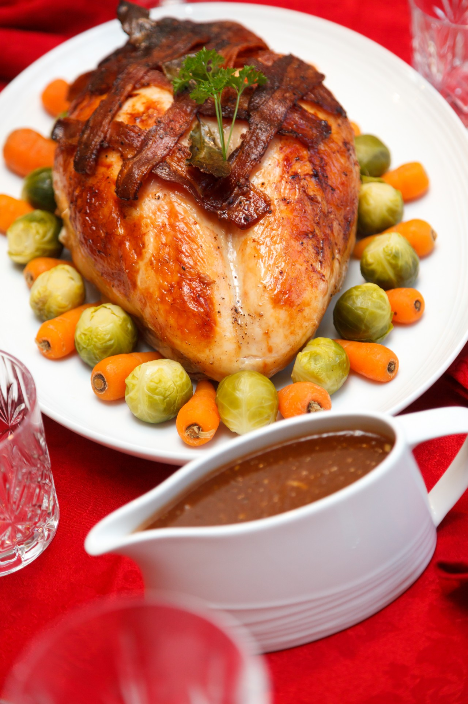

Christmas Roasted Turkey
Head back to our Home Page

Serve a traditional roast turkey for Christmas without the fuss.
Use the sticky glaze you'd get on a ham
to add flavour and golden colour to a turkey crown
Here are the ingredients:
- 50g butter
- 2kg turkey
- 1 tsp Chinese five spice
For the glaze:
- 4 tsbp honey
- 1 tbsp Dijon mustard
- 1 tbsp red wine vinegar
Method:
- Heat oven to 190C/170C fan/gas 5.
- Smear the butter all over the turkey crown and season all over with salt and half the five spice.
- Put in a roasting tin, skin-side up, and roast for 30 mins.
- While the crown is roasting, mix all the glaze ingredients in a bowl with the rest of the five spice.
- Remove the crown from the oven and brush the skin generously with half the glaze.
- Continue to roast for another hour glazing twice more, until cooked all the way through.
- Leave to rest for atleast 20 minutes before carving. Save the juices from the tin to make gravy.